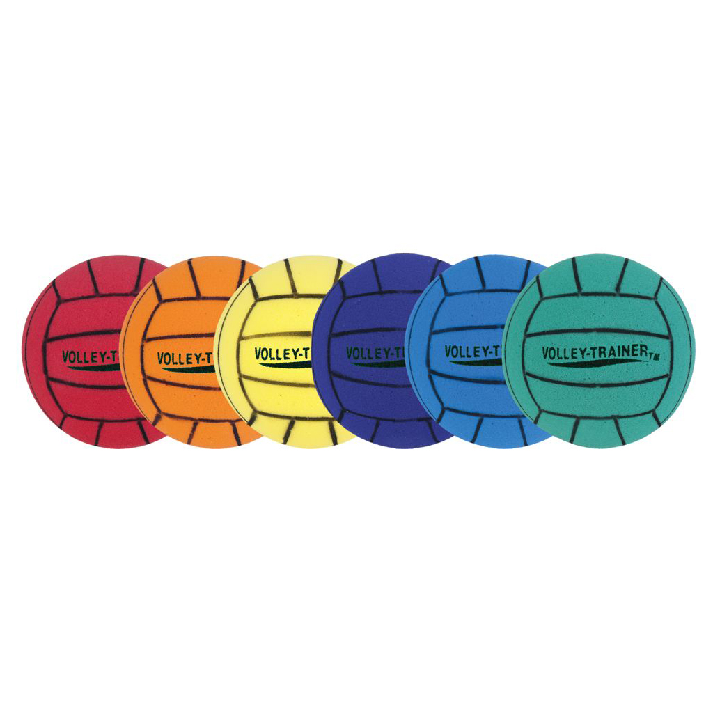

Serves
Bumping and digging
Setting
Attacking
VolleyBall
Volleyball can be a very fun, stressful and exciting game all at the same time. With usig the help and comunication of your teammates you can acheive big wins.
Rules
The basic rules of volleyball include: each team gets a maximum of three hits to return the ball over the net, a player cannot hit the ball twice in a row (unless it's a block), the ball can be hit with any part of the body, and boundary lines are in play. Teams rotate clockwise after winning a serve, and points are scored on every serve. Players must serve from behind the end line and cannot step on it until after contacting the ball. Hitting the net during play is a fault, and a ball hitting the net on a serve is still playable.
Positions
Outside Hitter (OH)
- Role: The primary offensive player who attacks from the left side of the court.
- Responsibilities: Hits spikes to score, receives serves, passes, and plays defense. They are often the best all-around players.
Opposite Hitter (Opp or RS)
- Role: Plays opposite of setter on right side of the court.
- Responsibilities: Hits and blocks, often tasked with blocking the opposing team's outside hitter.
Middle Blocker (Opp or RS)
- Role: Plays middle net and is primary blocker agaisnt opponent attacks.
- Responsibility: Blocks both sides of net and hits quick middle-set balls. They need to be quick and agile with good footwork and reaction time.
Libero (L)
- Role: A defensive specialist who wears a different colored jersy and can only play backrow.
- Responsibility: Reseives serves and digs attacks, focusing on defense. They can be substituted in and out freely.
plays in action
serving, passing, setting, and Attacking (or hitting and spiking), along with defensive actions such as blocking and digging.
